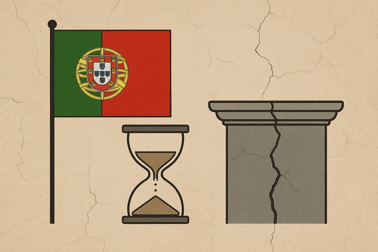

Publicado em 2025-06-19 22:51:27
Portugal está a tornar-se um lugar cada vez mais estranho.
Tendo vivido nas últimas décadas do século XX, confesso que esperava muito mais deste país no século XXI:
Esperava cidadãos mais esclarecidos, menos pobreza, mais produtividade, inovação industrial, competência, ética e profissionalismo.
Mas o que vejo é uma regressão perigosa:
a pobreza alastra, a corrupção alastra com ela,
e vivemos de um turismo barato, de enriquecimentos ilícitos,
e de uma prestação de serviços manhosos — de todas as formas e feitios.
Mas o que nunca esperei, mesmo,
é que se gerasse indignação porque alguém fez uma piada.
Uma piada! Seja lá que humor tenha sido.
Anjinhos ofendidos, doridos no orgulho,
como se a liberdade de expressão tivesse deixado de ser um direito…
para se tornar apenas uma figura de retórica nesta democracia cada vez mais teatral.
Artigo de opinião de Francisco Gonçalves in Fragmentos de Caos
Nota : Agora talvez comece a entender porque vejo tanta gente, a que apelidam de notáveis, a defender regimes como o Hamas, o Irão a Rússia e outros agentes do mal extremo.